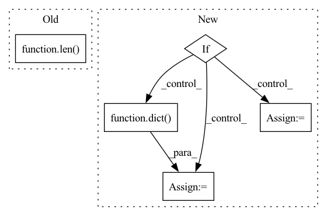

Pattern ID :15117
Before Change
for i, j in enumerate(job[0]):
assert j.return_value == {"a": i + 1, "b": 1}
if len( hydra_overrides) == 1:
assert Path("test_hydra_overrided").exists()
After Change
multirun_overrides = ["a=1,2"]
override_exists = len(overrides) > 1
if not as_dataclass:
cfg = dict(f=cfg)
task_function = lambda config: instantiate(config.f)
multirun_overrides = ["f.a=1,2"]
if as_dictconfig:In pattern: SUPERPATTERN
Frequency: 4
Non-data size: 5
Instances Fragment ID: 51268991
Project Name: mit-ll-responsible-ai/hydra-zen
Commit Name: 14fe02bc8490312762d6c897c7697b8a7f67a9ad
Time: 2021-04-06
Author: jgoodwin@ll.mit.edu
File Name: tests/experimental/test_implementations.py
M Class Name: AnonimousClass
N Class Name: AnonimousClass
M Method Name: test_hydra_launch_multirun(5)
N Method Name: test_hydra_launch_multirun(3)
M Parent Class:
N Parent Class:
M File Name: tests/experimental/test_implementations.py
N File Name: tests/experimental/test_implementations.py
M Start Line: 45
M End Line: 60
N Start Line: 80
N End Line: 111
Before Change
reverse=True)
if new_category_values:
n_new_cat = len( test_column[test_column.isin(new_category_values)])
new_categories.append({"name": feature,
"n_new": n_new_cat,
"n_total_samples": n_test_samples,After Change
unique_test_values = test_column.unique()
new_category_values = sorted(list((set(unique_test_values) - set(unique_training_values))))
if new_category_values:
new_category_counts = dict(test_column.value_counts()[new_category_values])
new_categories_ratio = sum(new_category_counts.values()) / n_test_samples
sorted_new_categories = dict( sorted(new_category_counts.items(), key=lambda x: x[1], reverse=True))
new_categories[feature] = sorted_new_categories
display_data.append([feature, len(new_category_values), new_categories_ratio,
list(sorted_new_categories.keys())[:self.max_new_categories_to_show]])
else:
new_categories[feature] = {}
// Display
if display_data: Fragment ID: 51269002
Project Name: deepchecks/deepchecks
Commit Name: 7d693ba1f0df6ee18aad78ba0887935f55199f79
Time: 2022-05-23
Author: matan@deepchecks.com
File Name: deepchecks/tabular/checks/train_test_validation/category_mismatch_train_test.py
M Class Name: CategoryMismatchTrainTest
N Class Name: CategoryMismatchTrainTest
M Method Name: run_logic(2)
N Method Name: run_logic(2)
M Parent Class: TrainTestCheck
N Parent Class: TrainTestCheck
M File Name: deepchecks/tabular/checks/train_test_validation/category_mismatch_train_test.py
N File Name: deepchecks/tabular/checks/train_test_validation/category_mismatch_train_test.py
M Start Line: 73
M End Line: 124
N Start Line: 74
N End Line: 111
Before Change
x = self.pruning(x, mask)
losses += loss
outs = outs[::-1]
if len( losses) == 0: // training
return outs
return outs, dict(loss_pruning=torch.mean(torch.cat(losses)))
After Change
losses += loss
outs = outs[::-1]
if gt_bboxes is not None: // training
if self.score_threshold > 0:
losses = dict(loss_pruning=torch.mean(torch.cat(losses)))
else:
losses = dict()
return outs, losses
return outs
def init_weights(self): Fragment ID: 51269000
Project Name: samsunglabs/fcaf3d
Commit Name: 0888bea97dd12b088d498b1f385254d3e7ae222b
Time: 2021-08-07
Author: danrukh@gmail.com
File Name: mmdet3d/models/necks/me_fpn.py
M Class Name: MEFPN3D
N Class Name: MEFPN3D
M Method Name: forward(5)
N Method Name: forward(5)
M Parent Class: nn.Module
N Parent Class: nn.Module
M File Name: mmdet3d/models/necks/me_fpn.py
N File Name: mmdet3d/models/necks/me_fpn.py
M Start Line: 38
M End Line: 51
N Start Line: 40
N End Line: 58
Before Change
)
assert job.return_value == {"a": 1, "b": 1}
if len( hydra_overrides) == 1:
assert Path("test_hydra_overrided").exists()
After Change
task_function = lambda config: instantiate(config)
override_exists = len(overrides) > 1
if not as_dataclass:
cfg = dict(f=cfg)
task_function = lambda config: instantiate(config.f)
if as_dictconfig:
if not with_hydra: Fragment ID: 51268997
Project Name: mit-ll-responsible-ai/hydra-zen
Commit Name: 14fe02bc8490312762d6c897c7697b8a7f67a9ad
Time: 2021-04-06
Author: jgoodwin@ll.mit.edu
File Name: tests/experimental/test_implementations.py
M Class Name: AnonimousClass
N Class Name: AnonimousClass
M Method Name: test_hydra_launch_job(4)
N Method Name: test_hydra_launch_job(2)
M Parent Class:
N Parent Class:
M File Name: tests/experimental/test_implementations.py
N File Name: tests/experimental/test_implementations.py
M Start Line: 22
M End Line: 33
N Start Line: 41
N End Line: 65